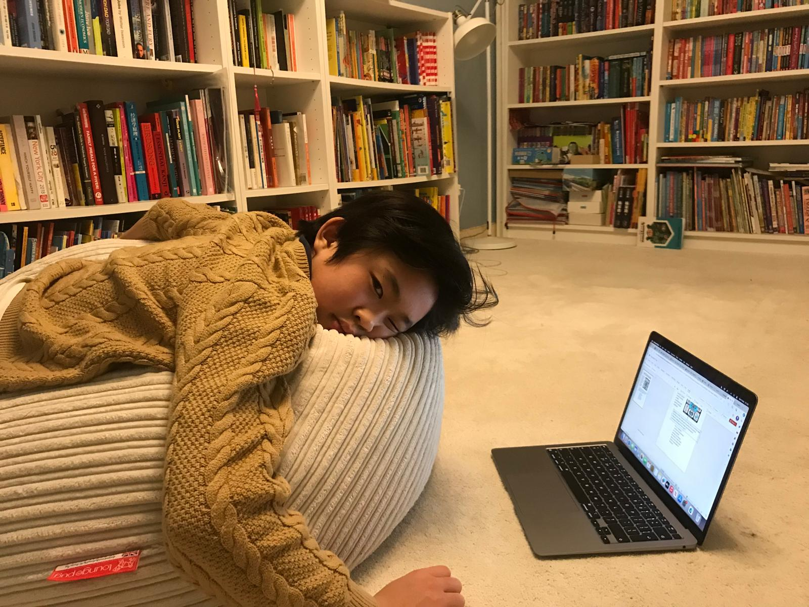
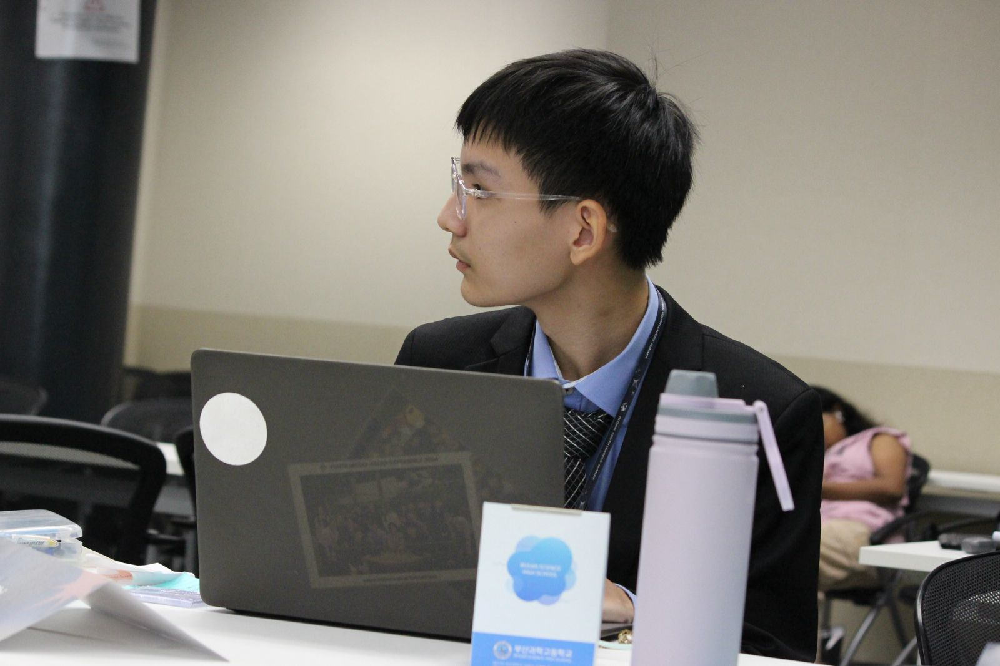

Team
The Minds Behind MoveMate
Created by three passionate developers during a collaboration between Perse School and SST

Yibo Liu
Chief Technology Officer
Leading the technical development and hardware optimization of MoveMate.

Tian Huai Yeoh
Chief Marketing Officer
Driving the marketing strategy and brand development for MoveMate.

Mun Zhong
Chief Design Officer
Creating the user experience and design language of MoveMate.